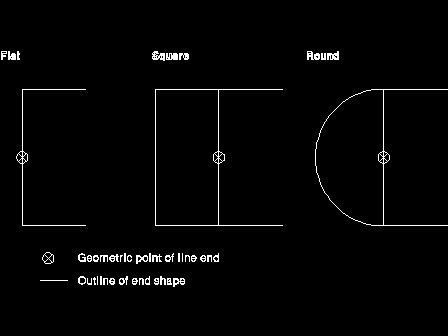

GpiSetLineEnd Parameter - lLineEnd
lLineEnd
(
LONG
) - input
Style of line end.

The possible values for this parameter are:
LINEEND_DEFAULT
Use default, same as LINEEND_FLAT (unless changed with
GpiSetDefAttrs
)
LINEEND_FLAT
Flat
LINEEND_SQUARE
Square
LINEEND_ROUND
Round.
[Back: GpiSetLineEnd Parameter - hps]
[Next: GpiSetLineEnd Return Value - rc]